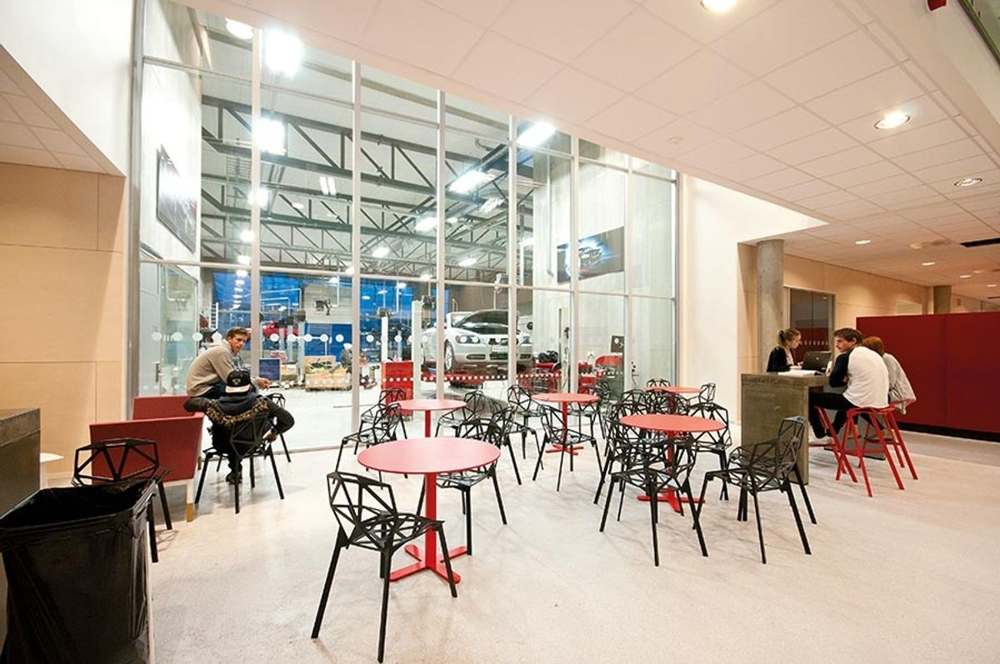
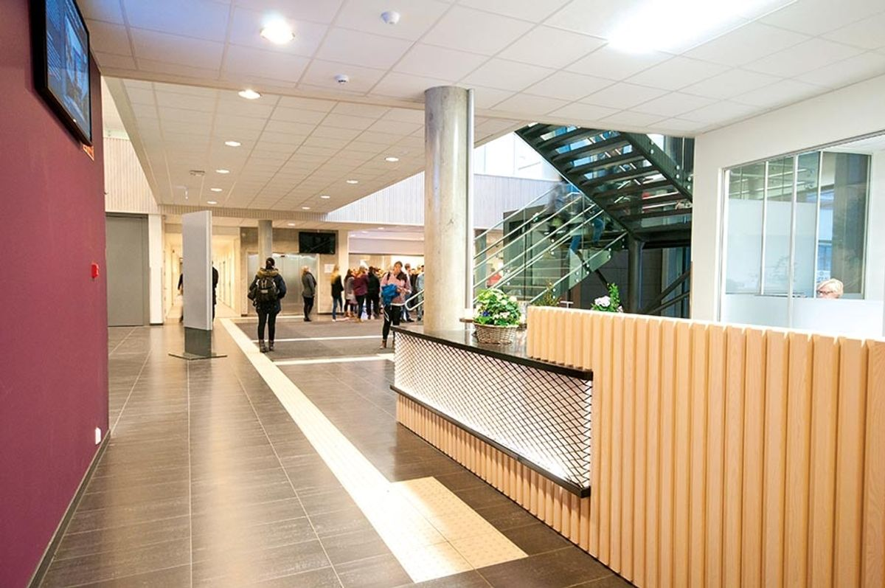
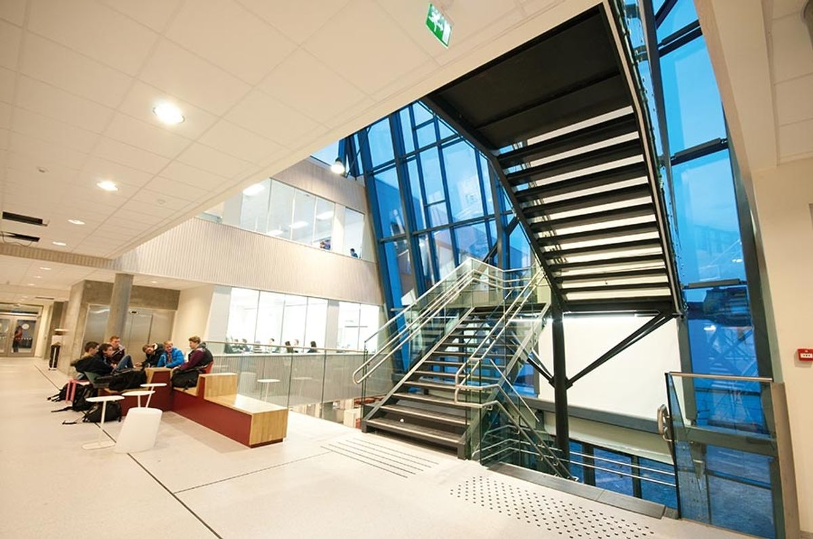
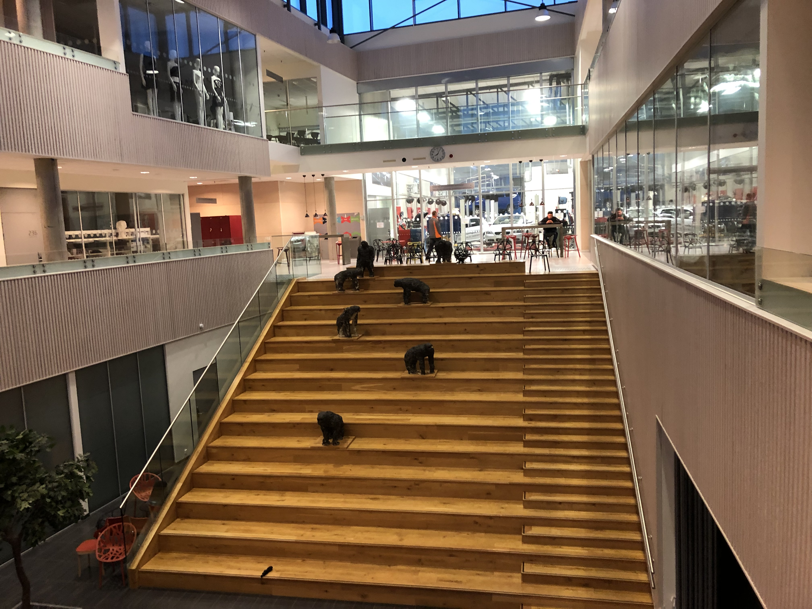

Hønefoss Videregående Skole er en kombinert videregående skole beliggende i Osloveien, på sørsiden av Hønefoss i Ringerike kommune, Norge.
Skolens motto er "Vi utvikler handlingsdyktige mennesker."
Med fokus på et bredt spekter av utdanningsveier, tilbyr den programmer innen elektro- og datateknologi, teknologi- og industrifag, bygg- og anleggsteknikk, helse- og oppvekstfag, informasjonsteknologi og medieproduksjon, restaurant- og matfag, frisør, blomster, interiør- og utstillingsdesign, kunst, design og arkitektur, medier og kommunikasjon, kombinasjonsklasser for språklige minoriteter, studiespesialisering med hverdagslivstrening, og generell påbygning for de som har fullført yrkesfaglige kvalifikasjoner.
I tillegg tilbyr skolen flere programmer for voksne gjennom Opus Ringerike og har en landslinje for yrkessjåfører lokalisert på Risesletta.
I januar 2015 flyttet skolen inn i helt nye lokaler på samme tomt som den gamle skolen i Osloveien. Nåværende rektor ved skolen er Torunn Mathisen. Skolen har ansvar for 850 elever med et personale på 165, fordelt på 50 klasser.